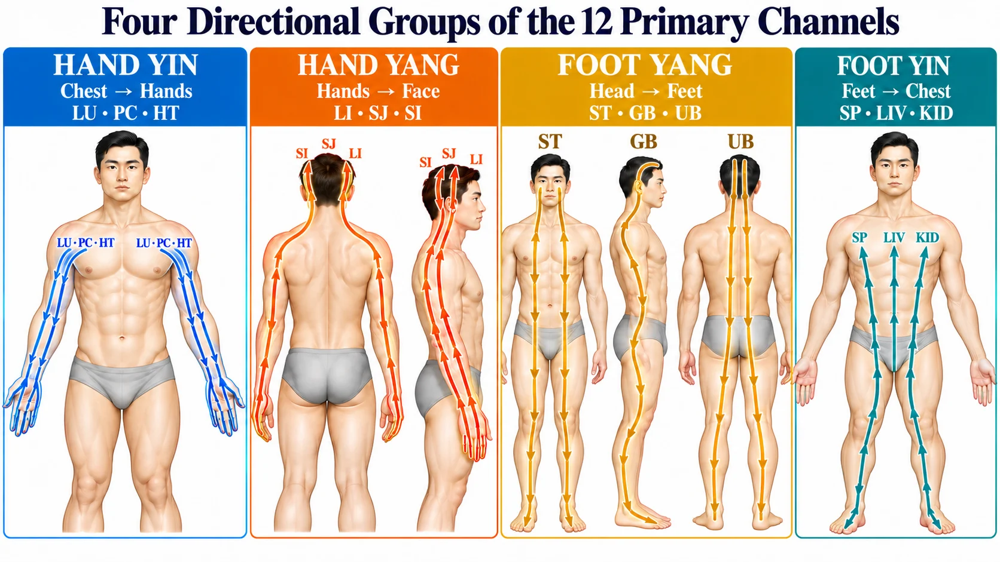
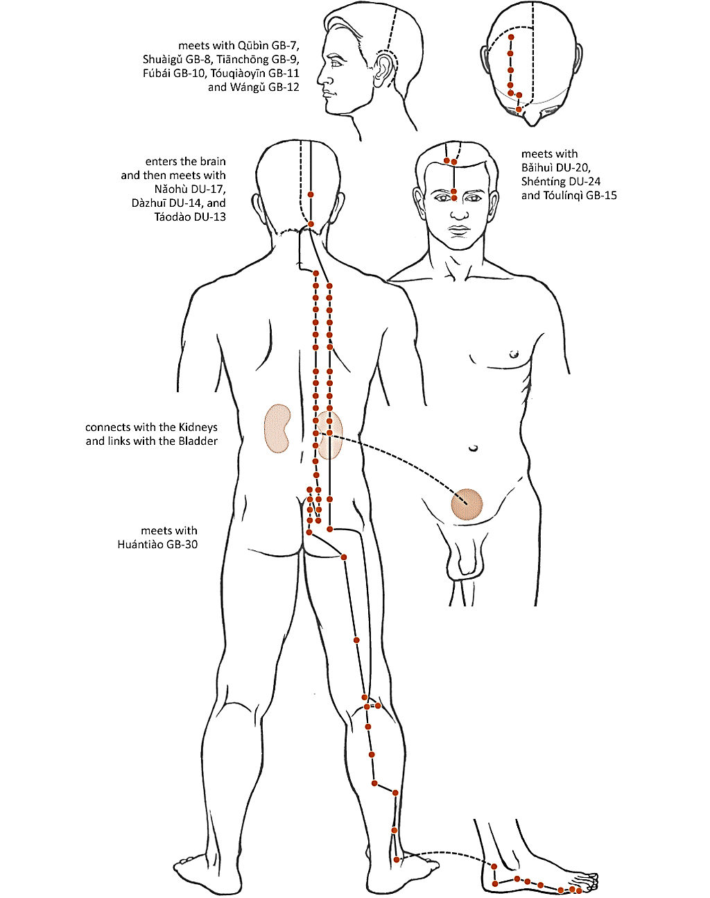
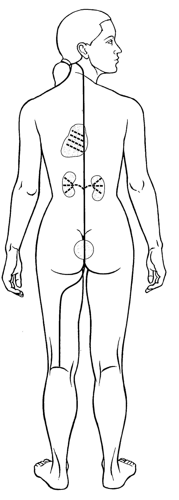
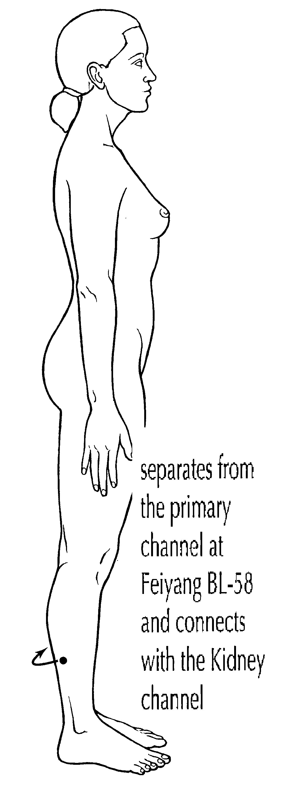
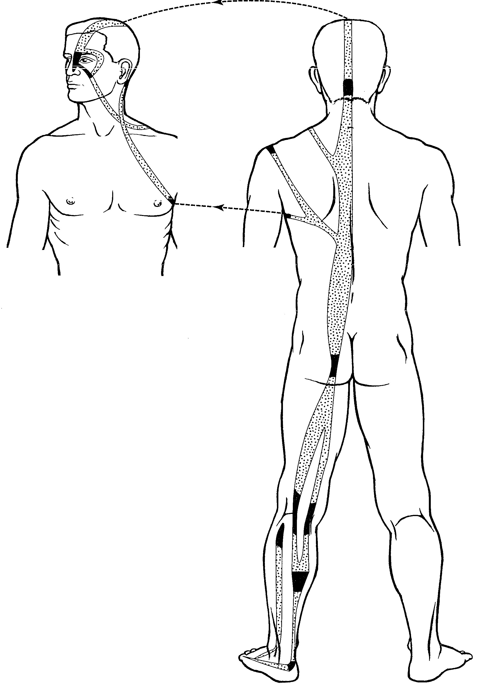

Board Exam Preparation
Review essential concepts, practice visual identification and complete the related Board-level activities.
Start Board PreparationRecognize, compare and justify Primary, Divergent, Luo-Connecting and Sinew pathways, plus selected Extraordinary Vessels, through twelve focused objectives.
← Back to Study Guide index
Use this chapter to strengthen Board Exam preparation and complete a structured Continuing Education review.
Review essential concepts, practice visual identification and complete the related Board-level activities.
Start Board PreparationFollow the CE learning plan, review source-based explanations and complete the Continuing Education review.
Start Continuing EducationThis chapter supports Board preparation and Continuing Education review. Board progress and Continuing Education completion, credit and certificate records remain separate.
Select the areas you believe you need to review and define the result you expect. Your answers will be compared with your final reflection.
This chapter transforms a large collection of channel images into one repeatable anatomical reasoning method. Learners compare five channel systems, verify routes with landmarks and explain why the closest alternative does not fit.
Use this pathway for Board preparation. Complete the reading and visual comparisons, then practice without notes before opening the related scored activities.
| Learning objective | What the learner will identify | Learning method |
|---|---|---|
| 1. Identify the pathway and relative position of the Twelve Primary Channels. | Hand/Foot, Yin/Yang, anterior–middle–posterior position and selected internal pathway landmarks. | Position maps, directional patterns, comparison table and retrieval practice. |
| 2. Identify the pathways and connections of the Twelve Divergent Channels. | Point of separation, deep entry, zangfu relationship, Yin–Yang pairing and region of re-emergence. | Yang/Yin pattern comparison, paired-channel reasoning and visual identification. |
| 3. Identify the origin, connection and destination of the Luo-Connecting Channels. | Luo point of origin, internally–externally paired channel and characteristic continuation. | Origin-to-destination table, route cues and image comparison. |
| 4. Identify the pathways and binding regions of the Twelve Sinew Channels. | Distal origin, limb surface, binding regions and terminal distribution. | Four limb groups, body-chain tracing and visual recognition. |
| 5. Recognize selected Extraordinary Vessels by their pathway pattern. | Transverse, central, lateral, medial and motility/linking patterns represented in this chapter. | Defining-shape comparison, pathway cues and mixed visual practice. |
| 6. Differentiate pathways from the same organ family across channel systems. | Primary, Divergent, Luo and Sinew features that share an organ name but differ in organization. | Same-family comparison grids, two-feature contrasts and retrieval practice. |
| 7. Distinguish visually similar pathways across different channel systems. | Depth, surface, direction, binding, origin and overall geometry in commonly confused routes. | Look-alike comparisons, elimination of distractors and landmark verification. |
| 8. Justify a mixed pathway identification using system evidence and two landmarks. | Integrated classification of unfamiliar or mixed images with a concise evidence statement. | Four-step analysis, evidence statements, error classification and mixed practice. |
| 9. Organize channel relationships by anatomical region and body surface. | Pathways reaching the head and neck, upper limb, thorax and back, abdomen and pelvis, lower limb and internal organs. | Searchable regional atlas, zone filters and reverse-recall retrieval. |
| 10. Analyze internal-organ, cavity and diaphragm relationships. | Routes that enter, connect with, disperse in or traverse zangfu and internal regions. | Verb-based comparison, internal-route maps and exception analysis. |
| 11. Compare major convergence and transition landmarks. | Shared hubs such as DU-14, BL-1, LI-15, GB-30, the supraclavicular fossa and chest. | Landmark matrices, paired comparisons and pathway reconstruction. |
| 12. Construct and defend an integrated pathway map for an unfamiliar region. | System, family, direction, depth, action word and two landmark confirmations. | Regional case mapping, evidence statements and structured self-correction. |
A pathway drawing is a map of relationships. Begin at the extremity and determine whether the route occupies a Yin or Yang surface. On the limbs, compare anterior, middle and posterior positions. Continue tracing toward the trunk and head, noting whether the line remains superficial, enters the zangfu, branches from a Luo point, binds across musculotendinous regions or follows the distinctive course of an Extraordinary Vessel.
Colors and line styles can change between textbooks and software. Use the anatomical course and system characteristics as primary evidence. Confirm an answer with at least two landmarks.
A Primary Channel image may emphasize the point-bearing external course while still showing internal branches. Divergent pathways are recognized by deep paired zangfu relationships and convergence. Luo pathways originate from connecting points and continue toward paired channels or distinctive regions. Sinew pathways spread through superficial muscles, tendons and binding regions without entering the zangfu.
Board connection: identify a Primary Channel from its limb surface, direction, organ name and characteristic internal or terminal connection.
Anterior: Lung
Middle: Pericardium
Posterior: Heart
Anterior: Large Intestine
Middle: Sanjiao
Posterior: Small Intestine
Anterior: Stomach
Middle: Gall Bladder
Posterior: Bladder
Anterior: Spleen
Middle: Liver
Posterior: Kidney
Use the labeled routes below to compare the external point-bearing pathway with important internal branches. In the Small Intestine image, the dashed line descending through the leg is its branch to the Lower He-Sea point at ST-39.
The T7/UB-17/UB-46 statement from the source quiz belongs to point location rather than channel-pathway identification, so it is intentionally excluded from this objective.
Board connection: distinguish a Divergent Channel from a superficial Primary, Luo or Sinew pathway and identify its paired-channel relationship.
Board connection: recognize that a Luo-Connecting Channel is the pathway arising from a Luo point—not the point itself—and trace its connection with the paired channel.
| Channel | Origin | Distinctive continuation used for recognition |
|---|---|---|
| Lung | LU-7 | Palm and thenar eminence |
| Large Intestine | LI-6 | Jaw, teeth and ear |
| Stomach | ST-40 | Nape, head and throat |
| Spleen | SP-4 | Abdomen, Stomach and intestines |
| Heart | HT-5 | Heart, root of the tongue and eye |
| Small Intestine | SI-7 | Shoulder |
| Bladder | BL-58 | Connects with the Kidney Channel |
| Kidney | KID-4 | Perineum and lumbar region |
| Pericardium | PC-6 | Pericardium and Heart |
| Sanjiao | SJ-5 | Posterior arm and chest connection |
| Gall Bladder | GB-37 | Dorsum of the foot |
| Liver | LIV-5 | Genital region |
Also recognize the special Luo pathways represented in the picture bank: the Governing Vessel Luo and the Great Luo of the Spleen.
Board connection: identify broad superficial musculotendinous routes by distal origin, limb surface, binding regions and terminal distribution.
Sinew Channels begin at the extremities, usually at a finger or toe region.
They follow the general territory of their associated Primary Channel and ascend toward the trunk or head.
They bind at joints and spread through muscles, tendons and broad superficial regions; they do not penetrate the zangfu.
Board connection: use the direction and overall geometry of the pathway to distinguish selected Extraordinary Vessels from the twelve-channel systems.
Transverse, belt-like course around the waist.
Deep central distribution through the lower abdomen and trunk.
Links Yang regions along the lateral body, shoulder and head.
Rises from the lateral heel through the lateral body toward the eye.
Rises along the medial lower limb through the abdomen and chest toward the throat.
Integrated comparison: an organ name alone is not an identification. Compare how Primary, Divergent, Luo-Connecting and Sinew routes organize the same family.
The Primary route supplies the directional, surface and point-bearing reference map. The Divergent route separates, enters deeply, relates to paired zangfu and converges through a Yang pathway.
The Luo route begins at a named Luo point and connects to a paired channel or distinctive destination. The Sinew route begins distally, spreads superficially and binds at joints.
Primary enters the heel, Luo encircles it, and both Divergent and Sinew bind there. The shared area is not enough—the action identifies the system.
Primary descends beside the spine, Divergent ascends along it and Sinew ascends laterally toward the nape. Direction separates three related pathways.
Primary encircles, Luo ascends and Sinew connects with other Sinew Channels. Compare verb, depth and route rather than the organ name alone.
Integrated comparison: eliminate look-alike answers by comparing depth, surface, direction and overall geometry before selecting a name.
Dai Mai crosses the waist transversely; Gall Bladder Sinew and Yang Wei travel longitudinally along lateral regions.
Primary is the point-bearing posterior reference; Divergent is deep and paired; Luo begins at BL-58; Sinew forms a broad posterior chain.
A branch is not automatically Luo. Confirm a named Luo origin and characteristic paired connection or destination.
Broad binding regions support Sinew; a narrower ordered external route with internal branches supports Primary.
Bladder Sinew forms the upper muscular net; Stomach Sinew forms the lower net. Inner versus outer canthus further separates Bladder, Small Intestine, Sanjiao and Gall Bladder routes.
Stomach marks the anterior aspect, Gall Bladder the lateral aspect, the Foot Yin channels the medial aspect, and Bladder–Kidney relationships the popliteal region.
Stomach Divergent emerges, Stomach Sinew ascends and Stomach Primary passes the corner; Du and Ren wind around the mouth. The verb reveals the system.
Integrated application: state the answer, name the system-defining evidence and cite two pathway landmarks while rejecting the closest alternative.
This objective moves beyond simple picture recognition. The learner must build a short anatomical argument: first identify how the pathway is organized, then connect that organization to a channel family, and finally prove the identification with two independent landmarks. A correct answer therefore includes the channel name, the channel system and the evidence that separates it from a plausible look-alike.
Look for a continuous external route, an ordered limb position and internal connections with its associated zangfu.
Look for separation from a Primary Channel, deep internal travel, zangfu relationships and reunion near the neck, face or head.
Look for a shorter branch beginning at a Luo point and connecting with the paired channel or dispersing toward a characteristic destination.
Look for a superficial muscular route that begins distally, binds at joints and does not enter the zangfu organs.
Look for a distinctive central, transverse, medial, lateral, motility or linking pattern that organizes several channel regions.
“This is Yang Qiao because it originates at the lateral heel at BL-62 and ascends laterally. It is not Kidney Luo, which encircles the heel.”
“This is Bladder Sinew because it circles the eye and forms the upper net. It is not Stomach Sinew, which forms the lower net.”
“This is the Small Intestine Divergent Channel because it follows a deep divergent organization and travels internally toward the Heart, Stomach and Small Intestine. These internal organ relationships distinguish it from the Small Intestine Sinew Channel, which remains superficial and binds at muscles and joints.”
One shared region may fit several pathways. Two independent landmarks reduce guessing and demonstrate that the student can reconstruct the route rather than recognize a single visual feature.
Regional retrieval: begin with an anatomical area, retrieve every pathway that reaches it, and then sort the routes by system, surface, direction and action.
Compare canthi, ear, cheek, jaw, mouth, nose, temple, forehead, occiput, vertex, throat and neck. Record whether each route begins, ends, circles, emerges, binds or passes through.
Separate chest, ribs, spine, diaphragm, abdomen and zangfu relationships. Distinguish a route that traverses a region from one that connects with an organ.
Use finger or toe origin, Yin or Yang surface, joint binding and regional landmarks at the shoulder, elbow, hip, knee, heel and foot.
Regional study reverses the usual direction of memorization. Instead of starting with a channel name, begin with a body area and reconstruct every pathway associated with it. This reveals areas of high overlap and teaches the learner which detail actually separates one route from another.
| Zone | High-yield areas | Question to ask |
|---|---|---|
| Head and neck | Eye, ear, cheek, jaw, mouth, nose, temple, throat, vertex | Which canthus, side, depth, terminal point or emergence pattern is shown? |
| Upper limb | Finger, palm, elbow, shoulder, axilla | Where does the route originate, bind or change from limb to trunk? |
| Thorax and back | Chest, ribs, diaphragm, spine, scapular and supraclavicular regions | Does it enter, disperse, ascend, descend, cross or attach? |
| Abdomen and pelvis | Genitals, perineum, umbilicus, uterus and hip | Is the course superficial, internal, encircling or a midline vessel? |
| Lower limb | Hip, knee, heel, foot and toes | Which surface, digit, joint aspect or binding region identifies the route? |
| Internal organs | Heart, Lung, Liver, Spleen, Kidneys, Stomach and intestines | Does the pathway enter the organ, connect with its pair or merely pass nearby? |
Internal-course reasoning: distinguish pathways by the exact relationship they establish with organs and body cavities rather than treating every internal line as equivalent.
Identify routes that enter an organ, connect with a paired zangfu or link the channel family—for example, Heart–Small Intestine and Lung–Large Intestine relationships.
Separate channels that traverse the diaphragm from pathways that spread, ascend, descend or disperse in the chest.
Use the supplied list to remember that eleven Primary Channels traverse the diaphragm; Bladder Primary is the listed exception.
Internal-course questions often use the same organ or cavity as a distractor. The discriminating clue is the relationship. A channel may originate in the chest, enter the chest, ascend through it, descend into it, disperse within it or pass through the diaphragm. These statements are not interchangeable.
| Relationship | Example from the regional atlas | Meaning for identification |
|---|---|---|
| Originates | Pericardium Primary originates in the center of the chest. | The region is the internal starting point, not merely a crossing. |
| Enters / connects | Heart Divergent enters the chest and connects with the Heart. | Depth and zangfu relationship support a Divergent pattern. |
| Disperses | Kidney Primary, Pericardium Sinew, Sanjiao Divergent and Chong Mai disperse in the chest. | A spreading internal distribution differs from a single linear passage. |
| Ascends / descends | Conception Vessel ascends the chest; Gall Bladder Primary descends into it. | Direction distinguishes routes that share the same cavity. |
| Traverses | Eleven listed Primary Channels traverse the diaphragm. | Crossing the diaphragm is a continuity clue; Bladder Primary is the listed exception. |
Trace each route as a sentence rather than as disconnected organ names: origin → organ entered → paired connection → cavity crossed → region of re-emergence. This method is especially useful for Primary and Divergent Channels because both may appear internally, but only the Divergent system follows the characteristic separation, deep entry, paired convergence and return pattern.
Landmark hubs: identify places where several pathways meet, cross, bind, emerge or change depth, and use the exact relationship to distinguish them.
The six Yang Channels meet the Governing Vessel here. Recognize it as a convergence hub rather than assigning the region to one channel alone.
Bladder, Yang Motility and Yin Motility relationships meet at the inner canthus; nearby routes must be separated by origin, direction and terminal behavior.
At the shoulder, several channels meet LI-15; at the buttock and hip, Bladder and Gall Bladder relationships converge around GB-30.
Primary, Divergent, Sinew and Extraordinary routes share this transition area. Depth and the next destination provide the decisive clues.
A shared landmark reduces the search area but creates a new comparison problem. At every hub, trace the incoming route, name what happens at the landmark and follow the outgoing route. The complete three-part relationship prevents a familiar point from being mistaken for proof of one channel.
| Hub | Relationships to compare | Decisive follow-up |
|---|---|---|
| Dazhui DU-14 | Six Yang Channels and Governing Vessel | Identify the limb pathway and the route before or after the meeting. |
| Jingming BL-1 | Bladder, Yang Qiao, Yin Qiao and nearby inner-canthus routes | Determine whether the pathway originates, meets another vessel or continues across the head. |
| Jianyu LI-15 | Large Intestine Primary and Divergent, Small Intestine Luo and Bladder Sinew | Compare point-bearing course, deep route, Luo origin and musculotendinous binding. |
| Huantiao GB-30 | Bladder crossing the buttock and Gall Bladder emerging or entering deeply at the hip | Distinguish a crossing relationship from emergence and deep entry. |
| Ear gathering region | Large Intestine, Stomach, Small Intestine, Gall Bladder and Sanjiao relationships | Use anterior, posterior, entering, emerging and encircling behavior. |
| Supraclavicular fossa | Primary, Divergent, Sinew and Yin Qiao pathways | Ask which system arrives, whether it emerges, and where it travels next. |
Integrated synthesis: build a defensible regional map that combines channel system, organ family, external or internal course, direction, action word and two independent landmarks.
Map the routes meeting LI-15 separately from Small Intestine at the posterior shoulder, Sanjiao at SJ-14 and Yang Qiao zig-zagging across the top.
Separate the many routes by system and action: Primary ascent, Divergent emergence or connection, and Extraordinary Vessel convergence.
Review the identity and one defining clue for every image supplied with this chapter.
Study the image first, name the channel system and pathway, then flip the card to confirm the answer and recognition clue.
Say the system, complete name and two visual clues before revealing the answer.
Use each acronym as a rapid filter. Then confirm the answer with two independent anatomical landmarks; a mnemonic starts the reasoning, but pathway evidence completes it.
QIAO = Eye & Motion: Yin and Yang Qiao connect with the eye and regulate motility.
WEI = Linking: Yang Wei links lateral Yang regions, shoulders and head; Yin Wei links medial Yin regions and the chest.
Hand Yin · L–P–HLung · Pericardium · Heart
Hand Yang · L–S–SLarge Intestine · Sanjiao · Small Intestine
Foot Yang · S–G–BStomach · Gall Bladder · Bladder
Foot Yin · S–L–KSpleen · Liver · Kidney*
Search by anatomical area, channel system, pathway name, acupuncture point or landmark. Open any card to review its spatial groupings and memory cue.
Name the pathways first, then reveal the grouped answer and mnemonic.
List every pathway you can recall. Include direction, surface or landmark when possible.
This structured plan organizes the Continuing Education learning path. The certificate is issued only after the mandatory module examination is completed; recognition of Continuing Education credit remains subject to applicable approval requirements.
Download the editable Word document with the course overview, objectives, instructional plan, mnemonics, assessment requirements, references and the complete Anatomical Region Atlas appendix.
This self-paced learning plan develops a repeatable method for distinguishing Primary, Divergent, Luo-Connecting and Sinew pathways, together with selected Extraordinary Vessels. The emphasis is visual identification supported by anatomical landmarks, channel-system characteristics and source-based comparison.
Use this overview to connect the twelve objectives before completing the mandatory Continuing Education examination.




| Channel system | Organizing pattern | High-yield action words | Best confirming evidence |
|---|---|---|---|
| Primary | Complete external route with internal branches | Begins · ascends · descends · enters | Direction, limb position and two characteristic landmarks |
| Divergent | Deep Yin–Yang paired pathway | Separates · enters · emerges · converges | Paired zangfu relationship and region of re-emergence |
| Luo-Connecting | Branch from a named Luo point | Connects · disperses · reaches | Luo origin, paired channel and distinctive destination |
| Sinew | Superficial musculotendinous chain | Binds · spreads · converges | Distal origin, joint bindings and absence of zangfu penetration |
| Extraordinary | Distinctive central, transverse, medial or lateral geometry | Girdles · links · ascends · encircles | Overall shape confirmed by named landmarks |
Certificate of Completion
This certifies that
has successfully completed the Continuing Education course
Preview: the final personalized certificate is issued only after the mandatory Continuing Education module examination is completed. All other exams are optional.
The current 180-minute learning plan equals 3 Continuing Education credits. Partial hours are always rounded down to the next lower whole credit. The mandatory examination time will be added when its final duration is established.
| Learner Objectives | Subject Matter | Teaching Method | Estimated Time |
|---|---|---|---|
| 1. Identify the pathway and relative position of the Twelve Primary Channels. | Hand/Foot, Yin/Yang, anterior–middle–posterior position, external course and selected internal landmarks. | Labeled pathway atlas, positional map, comparative reading and guided recall. | 15 minutes |
| 2. Identify the pathways and connections of the Twelve Divergent Channels. | Separation, deep entry, zangfu relationship, Yin–Yang pairing, convergence and re-emergence. | Pattern comparison, paired-channel reasoning and visual identification. | 15 minutes |
| 3. Identify the origin, connection and destination of the Luo-Connecting Channels. | Luo point of origin, paired-channel connection and characteristic continuation. | Origin-to-destination method, route clues and image comparison. | 15 minutes |
| 4. Identify the pathways and binding regions of the Twelve Sinew Channels. | Distal origin, limb surface, binding regions and terminal distribution. | Four-group organization, body-chain tracing and visual recognition. | 15 minutes |
| 5. Recognize selected Extraordinary Vessels by their pathway pattern. | Transverse, central, lateral, medial, motility and linking patterns represented in this chapter. | Defining-shape comparison, pathway landmarks and mixed visual practice. | 15 minutes |
| 6. Differentiate pathways from the same organ family across channel systems. | Primary, Divergent, Luo and Sinew organization compared within shared anatomical areas such as heel, spine and genitals. | Same-family matrices, action-word contrasts, anatomical atlas lookup and reverse-recall flashcards. | 15 minutes |
| 7. Distinguish visually similar pathways across different channel systems. | Look-alike routes separated by exact area, surface, depth, direction, binding, origin, destination and geometry. | Regional comparison of eye, knee, mouth and other high-overlap areas; distractor elimination and landmark verification. | 15 minutes |
| 8. Justify a mixed pathway identification using system evidence and two landmarks. | Integrated interpretation using anatomical area, action word, channel-system evidence and two independent landmarks. | Locate–Classify–Confirm–Justify method, region flashcards, evidence statements and error review. | 15 minutes |
| 9. Organize channel relationships by anatomical region and body surface. | Head and neck, upper limb, thorax and back, abdomen and pelvis, lower limb and internal-organ zones. | Searchable anatomical atlas, zone filters, region-first sorting and reverse retrieval. | 15 minutes |
| 10. Analyze internal-organ, cavity and diaphragm relationships. | Routes that enter, connect, traverse, disperse, originate or pass through internal structures. | Action-verb comparison, internal-route mapping and exception analysis. | 15 minutes |
| 11. Compare major convergence and transition landmarks. | DU-14, BL-1, LI-15, GB-30, the supraclavicular fossa and other shared pathway hubs. | Landmark matrices, paired comparisons, route reconstruction and flashcard retrieval. | 15 minutes |
| 12. Construct and defend an integrated pathway map for an unfamiliar region. | System, family, depth, direction, regional action and two independent landmark confirmations. | Regional case mapping, evidence statements, closest-alternative rejection and self-correction. | 15 minutes |
| Current total and CE credits | 180 minutes · 3 credits | ||
This continuous reading extends comparison and clinical reasoning across the chapter and supports the twelve objectives in the Continuing Education Learning Plan.
Visual pathway questions become difficult when several systems share the same organ name. “Liver” may refer to a Primary, Divergent, Luo-Connecting or Sinew route, yet each image organizes the body differently. The most reliable approach is to identify the system before naming the organ. This prevents a familiar body region from becoming the only reason for an answer.
The Twelve Primary Channels provide the principal positional map. Hand Yin, Hand Yang, Foot Yang and Foot Yin establish direction and limb surface. The anterior–middle–posterior relationships further distinguish the three channels in each group. Other systems can then be compared with this reference rather than learned as unrelated diagrams.
Divergent Channels are deeper branches associated with the Twelve Primary Channels. A Yang Divergent route enters both paired zangfu and rejoins its Yang Primary Channel after re-emerging. A Yin Divergent route enters its Yin organ, connects with the paired Yang Divergent pathway and joins the Yang Primary Channel. Their organization into paired convergences explains why an image may show relationships that are not visible on the ordinary point-bearing pathway.
A Luo-Connecting point and a Luo-Connecting Channel are not interchangeable terms. The point is the named origin; the channel is the pathway that leaves it. Visual recognition improves when each route is studied as origin, paired connection and characteristic continuation. LI-6 toward the jaw, teeth and ear; ST-40 toward the nape, head and throat; and LIV-5 toward the genital region are examples of distinctive continuations.
Sinew Channels begin at the extremities and ascend through muscles, tendons and binding regions. They tend to appear wider and more regional than a single point-to-point Primary Channel line. Joint bindings, muscular spread and terminal distribution are stronger clues than internal-organ connections, because the Sinew Channels do not penetrate the zangfu.
Selected Extraordinary Vessels can be recognized by their overall geometry. Dai Mai is transverse and girdles the waist. Chong Mai has a deep central relationship with the lower abdomen and trunk. Yang Qiao rises from the lateral heel toward the eye, while Yang Wei links lateral Yang regions. Yin Wei ascends medially through the trunk toward the throat. These shapes should be confirmed against their pathway landmarks rather than used as decorative silhouettes.
The Anatomical Region Atlas adds a second direction of study. Instead of starting with a named channel and tracing its course, the learner begins with an area—such as the eye, heel, knee, diaphragm or spine—and retrieves every pathway that reaches it. The next step is to separate those pathways by action word, system, direction and landmark. This reverse reasoning directly strengthens Objectives 6, 7 and 8.
Objectives 9 through 12 extend the atlas from memorization into structured analysis. Learners organize routes by anatomical zone, distinguish internal relationships by action verb, identify convergence hubs and finally construct a complete map for an unfamiliar region. A strong map does not merely list channels: it separates system, family, direction, depth, regional action and next destination.
A symptom located along a pathway can guide further examination, but location alone does not establish a zangfu pattern or determine treatment. Pattern differentiation, anatomy, safety, the complete presentation and the individual actions of points remain necessary. These pathway images are learning models; they should not be interpreted as modern anatomical structures or fixed tissue planes.
First reconstruct the four Primary Channel groups without an image. Next compare one organ family across systems—for example, Liver Primary, Divergent, Luo and Sinew. Then practice mixed images and explain aloud which two features establish the answer. When an error occurs, return to the relevant objective and identify whether the mistake involved system, body surface, direction or a missing landmark.
Study the entire course before revealing the answer. Your result is not stored.
What channel or vessel is shown?
Open the assigned 10-question practice exam for each learning area. Every button opens the corresponding Moodle activity in a new tab.
Use the School Level activities to reinforce terminology, pathway direction and the characteristic landmarks of each channel system.
Open each original Moodle activity directly from this section. The original titles and links are unchanged.
One clear record for all 12 objective exams and the Continuing Education practice exam.
13 practice exams tracked automatically in this browserNo practice exam activity has been recorded yet. Open an exam below and check an answer to begin.
Complete the twelve 10-question practice exams after reviewing the corresponding learning objective. Each exam identifies the objective being assessed and contains explanatory feedback; Objectives 9–12 also use the Anatomical Region Atlas, reverse-recall flashcards and integrated mapping activities.
This is the mandatory module examination for Continuing Education. The Continuing Education certificate is received after this required exam is completed; all other chapter and practice examinations are optional.
Open Continuing Education Exam — 10 Questions Mandatory for certificate · Other exams optionalThese references support the terminology, channel descriptions, anatomical relationships and Board-oriented comparisons used throughout the chapter.
Educational use note: the Anatomical Region Atlas and summary tables synthesize the listed channel descriptions for retrieval practice. They do not replace the complete source texts, modern anatomy instruction, clinical assessment or safety training.
Compare your starting point with what you can do now. This reflection measures perceived progress; use your practice-exam results as the objective check.
This is a guided self-assessment, not an exam score. Confirm perceived readiness with the related practice questions and the mandatory Continuing Education examination when applicable.